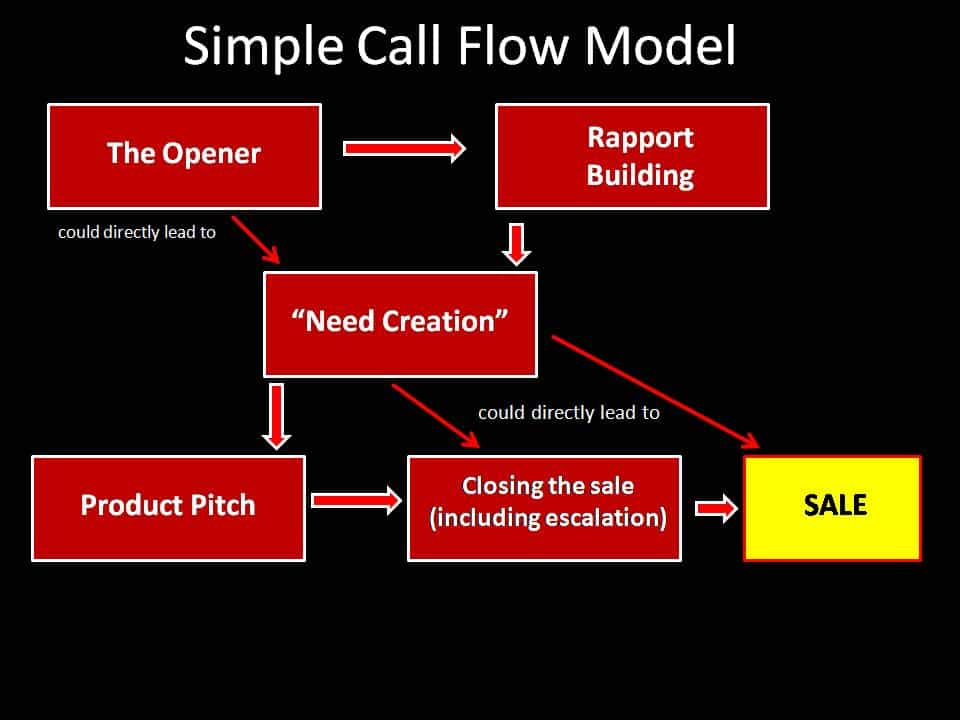

< < < Back
The Enduring Similarities Between Sales And Seduction – Return Of Kings
The concept of seduction can be explained with different analogies in real life, by each person. One common analogy is that of sales, and a lot of has been already said on how sales is very much like game (or seduction): in sales, you pitch your product; and in seduction, you “pitch” yourself – where you are the “high value product” which brings quality and value to her life.
Maxim #1a: Women desire men of better quality than themselves.
Since the science of selling is deep and vast, so are its lengthy analogies to game – with some slight differences. And dating essentially being also an amoral power game, so references from Robert Greene’s “The 48 Laws of Power” have been used here to further highlight their use and significance in the analogies between both sales and game techniques.
Some commonalities which immediately come to mind:
1. Buyers are the gatekeepers of the sale, while women are the gatekeepers of sex.
2. Emotional rapport often trumps logical rapport in both game and sales.
3. Game and sales both involve dealing with shit tests and flaking from women and buyers. The correct rebuttals are the tools to help you stand your ground.
4. Both sales and game are dynamic and constantly evolving. The basic nuts and bolts of both game and sales may remain the same, but there is no single style of selling (seduction) which works with every buyer (woman).
5. Since game and selling would never stop, learning never stops in both.
There are however certain differences when it comes to sales and seduction, but the one which comes first to mind is that in real life, you don’t have to “pitch” yourself as a product to women all the time.
Sometimes, women pitch themselves as a worthy buyer or are gaming you instead; this happens when there are more buyers (women) and there are fewer sellers (men), or when you are the higher value product with more options (buyers) as compared to others—which automatically gets bought because of your higher value to women, with minimal effort.
Always remember the call flow
One simple example is that of cold call selling, which is quite similar to cold approaching. The styles of cold selling and gaming in cold approaches can be improvised or innovated by each person, but most of them usually follow a sequence of parameters what in telemarketing terms can be called as the call flow model.
Most call flow models focus on five main parameters (whose sequence can be improvised depending on the type of buyer), as seen in a sample generalized call flow chart below.

Here the “product” is usually introduced subtly after an covert opener, followed by enough rapport building and a sufficient “need (and value) creation” for the product. Quite similar to the technique used in cold approaches, the call flow model first focuses on harmless insinuation into an unsuspecting buyer’s space (mind) and then the eventual seduction.
Each of these five main parameters could be interpreted in a game analogy, below as:
1. The Opener:
The opener is often an important parameter of the sales process which effectively contributes in initiating a covert yet strong initial insinuation into the buyer’s space (mind). And in game, a good opener is what effectively insinuates your “harmless” entry initially into the woman’s space.
“Conceal your intentions” (Law No.3) and “Enter action with boldness” (Law No. 28) explain important basic ideas about how an opener could be formulated. Usually a good cold seller (player) doesn’t want his buyer (woman) he seeks to seduce to immediately pull up a bitch shield and hang up, by using an opener which reveals his intentions abruptly. And a bad or half-assed opener is what will require additional effort to compensate for its weak impression, unless if the customer (or woman) is already into you to begin with.
2. Rapport Building:
In sales, “rapport building” is where salespersons determine (judge) their prospective customers personalities and desires often through probing, cold reading and mirroring to build the appropriate rapport that helps in securing faster and easier sales.
This parameter focuses on ideally building emotional and (or) intellectual rapport with buyers—but if both are not possible, then the focus should primarily be on emotional rapport (more so in game, since women being primarily emotional creatures, how you tweak their emotions and minds is what helps in “need creation”—the need to have sex with you). Thus, an emotional rapport has more chances of success than an intellectual rapport, unless your customer is an overly intellectual type to begin with. This is where “rapport building” comes into the picture—to bait the cat into the bag.
In the game analogy, this parameter is where you can introduce the different types of game: asshole game, confident beta game, provider game or so on – depending on the type of woman you’re dealing with, after probing enough so as to build the right rapport with her. Every customer is different; so are the different tastes of women that you might be dealing it. The important points in rapport building are efficient probing and cold reading—to judge your buyer’s nature effectively so as to build the required appropriate rapport.
Certain laws which could be further implemented during the rapport building process are:
-
Law No.4: “Always say less than necessary” – probe more, reveal less
- Law No.8: “Make other people come to you: use bait if necessary”
- Law No.9: “Win through your actions, never through argument”
- Law No.12 : “Use selective generosity and honesty to disarm your victim”
-
Law No.14: “Pose as a friend, work as a spy”– use rapport building to probe
-
Law No.32: “Play to people’s fantasies” – in game terms, that is to her ‘fantasy’
-
Law no.33: “Discover every man’s thumbscrew” – find your buyer’s (her) thumbscrews
- Law No.38: “Think as you like, but behave like others”
-
Law No. 43: “Work on the hearts and minds of others”– to heighten buyer interest
-
Law No.44: “Disarm and infuriate with the mirror effect”– to innocuously disarm your buyer
It is important to note that the correct rapport built usually then effortlessly generates “need creation” – where the need for the “product” (i.e. sex with you) is planted effortlessly in the customer’s mind by the seller. On the other hand, the wrong choice of or inadequate rapport built is what leads to delayed sales (sex), or worse: getting sidetracked (friend zoned) by buyers (women) to get no success at all.
3. “Need Creation”
This could possibly be called the single most important parameter of the call flow model, or seduction. Without a need, there would be no sale. As long is one exists, a sale is possible.
“Need creation” essentially means: the customer experiences the “need” to buy your product, or in game analogy that the woman experiences the desire for sex with you. You must then create this need, which is essentially the “make or break” part of the sales pitch or seduction – especially when the customer doesn’t already have the need to buy your product, or the woman in question doesn’t already have the need to sleep with you .This parameter is also – where and how you ” create value ” for your “product” (i.e. you, in seduction terms).
This is where experienced players employ boyfriend destroyer tactics (to destroy the buyer’s other options), or use communication (both verbal and non-verbal) which gets women thinking about sex with them, and transforming that thought into a desire. This eliminates your buyer’s options, and keeps them dependent on you – as Law 11: “Learn to keep people dependent on you”.
Furthermore, in sales terminology, it is called “need creation”– as a need is often more difficult to resist than a “want” in a world of illimitable available options. However in game, you just have to focus on making her wanting to fuck (you) – instead of needing to fuck (you); by verbal or non-verbal suggestion. No matter how good your product might be, or how good your eventual product pitch might be, an insufficiently strong need usually generates the most roadblocks to a sale (and sex).
This aspect of the seduction process is where the most desirable men fail in getting the pussy they want even after a strong opening and a supposedly correct rapport built previously – because they fail in creating the adequate value about themselves and need for sex with them in women’s minds. Conversely, if the woman already has the need for you, no matter how bad your prior game with her might’ve been, she’d still want to fuck you. The efficacy of all other parameters thus depend on how strongly need creation is generated.
True, some sellers sometimes successfully “supplicate” to buyers into buying from them even if there is no need for the product, but again in those scenarios there is still a need created in the mind of the buyer—the need to get rid of the seller by buying his product. Those supplicated “sales” could be described as “mercy or pity fucks.”
Law No.13 : “When asking for help, appeal to people’s self-interest; never to their mercy or gratitude”—this should be kept in mind during the entire seduction process—and more so during this parameter, as supplicating is detrimental to both need and value creation.
4. Product pitch
The next parameter of the call flow model is introducing and pitching the product effectively. In game analogy, this product is YOU (or sex with you).
In sales, how valuable your product is what effortlessly helps in closing the sale after proper need creation. If your product is good enough, sometimes it could guarantee its sale by the virtue of its value itself that generates the need.
In real life, this parameter of the call flow model often comes first (sometimes before the opener), because the buyer (woman) sees you as the product first. The most important person in your life is YOU, so you must take care of yourself (and your life) very well, and focus on self improvement all the time. As a bonus, this serves to make a lasting impression on women. Women are hypergamous by nature, so project yourself as a unique high value product—which they’d instinctively gravitate to.
5. Closing
The final parameter of the call flow model is escalation and closing the sale (in game terms, escalation to sex).
How do sellers know if the need created is adequate enough? Through “trial closes”—when sellers test the strength of the created need—by escalation. The same analogy applies in game: in order to know whether the need for sex is adequately generated or planted in the woman, escalation is necessary. Persistence and boldness (not supplication) become even more necessary during the closing part of the sale and seduction.
Post sale (post-sex), retention is the aspect of sales where the focus is on customer relationships. In game, the analogy could be relationship game.
One thing to remember at all times during the entire call flow (or seduction) process is Law No. 31: “Control the options – get others to play with the cards that you deal.” Your buyers should feel they are in control, but are actually your puppets. In short, you must be in control during the entire interaction, by giving buyers (women) options that come out in your favor whichever one they choose, and also creating value for yourself to ensure your control.
Other similarities
Important and effective mindset traits to acquire for both game and sales are :
1. The Dark Triad Mindset
The often irresistible appeal of The Dark Triad personality again. Just as women are attracted to them, so are buyers in the commercial world. As seen in other careers as well, sales persons who embody Dark Triad traits are found to be more successful than their competitors.
2. Analysis, self-motivation and harnessing fear to your advantage
A good salesperson is not fearful of rejections or losing the sale, but rather he would be fearful of failing to rise from his failures and mediocrity – so he harnesses the fear of mediocrity to propel and self motivate himself towards success and achievement.
He understands that failure is the stepping stone to success – when failure is used to ascertain where his pitch went wrong. In telemarketing, most sellers record their calls and listen to determine as to which their failed pitches stumbled. The same approach applies in game.
3. Sales Hunger and the Killer Instinct
In life, there are often only two ways to resolve a problem: to either resolve it or dissolve it. Once you’ve got the cat eating out of your hand, don’t delay in belling it.
In sales, no matter how emotional the rapport with the customer might be, a good seller would never hesitate to go in cold-bloodily for the kill—to secure the sale—as the end justifies the means. He understands that his happiness manifests itself through getting regular sales, and not through stagnant buyers. The same thing goes for seduction. Hesitancy, procrastination, or failure to escalate after adequate “need creation” only results in analysis-paralysis which allows the customer (or woman) to lose interest and get out of your grasp.
4. Constant approaching and the Abundance Mentality
The abundance mentality is extremely important in both sales and game (where comparatively you can pitch yourself to as many women as possible, and have more chances for sex).
A good sales person understands the importance of approaching boldly very well, and understands that it is a numbers game when it comes to success. He thrives when he has a large pool of customers to target on, than a limited number of options which limits his options, his game, as well as the chances of his success.
Adopting the cold blooded and calculated approach which rebounds effortlessly from brutal or harsh rejection and flaking is what separates the experienced from the rookies. Leaving the ego out of the picture is extremely important, or better still, hardening oneself from rejections is what makes men into seasoned players.
5. Improvisation and spontaneity
Whether it is witty stories and one-liners during rapport building, powerful rebuttals to stand your ground in face of roadblocks of flaking and worse behavior, or innovative ways of need creation, improvisation and spontaneity are some things which should never be left out in both sales and seduction. Law no.35: “Master the art of timing” and Law No.48: “Assume Formlessness” explain that very well. Rigidity in technique is the death to successful results in both game and sales.
A good telemarketeer has the ability to size up his customer effectively and quickly in order to alter the sales pitch call flow steps sometimes to get the deal as fast as possible.The same thing applies in game. The experienced player who has the ability to correctly judge that the woman he’s targeting already needs sex with him, doesn’t waste his time on a lengthy intro or rapport building. He directly escalates for sex – because he knows that the need for sex and his high value is already present (created) in her mind.
Conclusion
The more you practice game, the more you will realize that the dynamics of seduction are more or less similar to sales, with slight differences. Game simply offers more possibilities and has fewer constraints than sales, especially when it comes to options in a world of approximately 3.5 billion women. Like a skilled hustler, always remember that when it comes to a world of billions of buyers (women), the world is your limitless oyster.
Read Next: Go for No


{kind=link}
{kind=link}
{kind=link}
{kind=link}
{kind=link}
{kind=link}